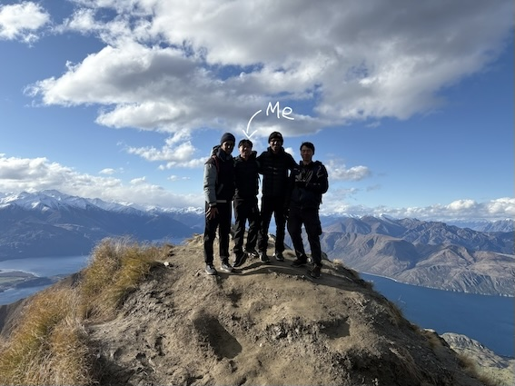

Computer Science + Actuarial Studies student by day.
Gamer, coder and professional "one more game" victim by night.
I'm a third year Computer Science and Actuarial Studies student at UNSW. I enjoy trying new things, travelling, food, hiking and design.
☀️ Daytime hobbies/happs: looking for somewhere to eat, planning a trip, hiking or playing paddle.
🌙 Nighttime hobbies/happs: going out to eat, Rocket League, Minecraft, or maybe cheeky drinks
Languages:
Other tools:
COMP courses:
COMP1511, COMP1531, COMP2521, COMP2511,
COMP3821, COMP6771, COMP9417, COMP3311
My design work: Fiverr
I really enjoy travelling and hiking. One of my favourite trips was New Zealand, especially hiking Roy's Peak.

I really hope that I have the chance to be a part of DevSoc! I'm super eager to learn more about software devlopment, make new friends and make some memories! While I don't have a lot of software development experience I hope that my growth mindset and enthusiastic attitude makes up for it! (I had no experience with website development so apologise for the sub-par website, but I learnt the basics on the fly through some quick google searches!)